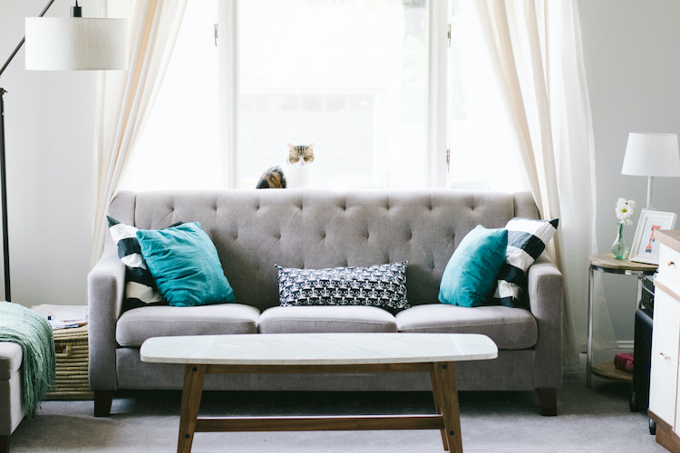

Single Blog

Saat ini kanker indung telur (ovarium) merupakan penyebab kematian nomor tiga bagi wanita setelah kanker mulut rahim dan kanker payudara. Selama tahun satu dekade ini terjadi lebih dari 20.000 kasus baru penderita kanker ovarium bisa berawal dari pertumbuhan kista ovarium, yang kini banyak dialami wanita berusia muda dan tua. Karena sering kali tidak memperlihatkan gejala, kista ovarium jarang terdeteksi sedini mungkin. Kista merupakan pertumbuhan tidak normal dari jaringan tubuh. Bentuknya berupa kantung berisi cairan dan bisa disertai pertumbuhan jaringan padat. Sebenarnya kista dapat tumbuh di berbagai organ tubuh, seperti kulit, ginjal, dan dinding rahim. Namun yang paling sering dialami wanita adalah kista indung telur. Kista berbeda dari miom (mioma uteri). Miom adalah tumor jinak di otot rahim yang tumbuh secara abnormal sehingga membentuk jaringan lebih padat daripada jaringan otot rahim biasa. Miom yang berukuran kecil tidak mengganggu. Namun miom yang besar (berukuran lebih dari 10 cm) sebaiknya dioperasi karena biasanya menimbulkan banyak perdarahan saat haid, menimbulkan gangguan buang air besar dan kecil, serta sering kali menimbulkan rasa nyeri yang hebat. Miom dapat memengaruhi proses pertumbuhan janin serta meningkatkan risiko abortus.
Kista dapat tumbuh di indung telur akibat proses ovulasi (pelepasan sel telur dari ovarium) yang tidak terjadi sehingga folikel (tempat sel telur berkembang) terus tumbuh dan membesar. Keadaan itu disebabkan oleh ketidakseimbangan hormon estrogen dan progesteron dan bisa terjadi akibat pengaruh obat penyubur yang tidak terkontrol. Gejalanya sebenarnya ada. Namun acap kali tidak diperhatikan dan dirasakan oleh penderita, yakni berupa siklus haid yang sering terlambat.
Pemeriksaan USG dapat memberikan hasil cukup baik mengenai keberadaan kista, ukuran kista, isi dari kista (cairan atau jaringan padat), serta tanda-tanda keganasan. Bila mencurigai ada keganasan, dokter meminta pasien melakukan pemeriksaan radiologi (CT scan) untuk memperjelas diagnosis dan melihat penyebaran kista yang bersifat ganas.
Kista ovarium tidak selalu memengaruhi kesuburan karena banyak wanita yang mempunyai kista ovarium tetap bisa hamil. Ibu hamil yang menderita kista ovarium jinak berukuran kecil (diameter lebih kecil dari 3 cm) biasanya tidak terlalu terpengaruhi. Gangguan bisa dijumpai bila kista pecah, terpuntir, atau bertambah besar. Bila hal itu terjadi, pembedahan harus segera dilakukan oleh dokter untuk mengangkat kista.
Pembedahan dilakukan dengan teknik tertentu yang tidak mengganggu janin, sehingga pasien tetap bisa melanjutkan kehamilan. Apabila saat melahirkan tiba, persalinan dengan bedah Sesar dilakukan bila posisi kista dekat jalan lahir atau karena ukuran kista sudah besar dan memang sudah saatnya untuk dioperasi.
Wanita yang tergolong berisiko tinggi mengalami kista ovarium adalah wanita yang dalam keluarganya memiliki riwayat kanker ovarium atau kanker payudara. Kelompok keluarga itu dikenal sebagai breast ovarium cancer syndrome. Bila Anda termasuk kelompok itu sebaiknya segeralah berkonsultasi ke dokter kandungan dan kebidanan untuk deteksi lebih lanjut. Saat ini deteksi kanker indung telur dan payudara sudah dapat dilakukan melalui darah dengan pemeriksaan tumor marker.
Waspadai kebiasaan Anda mengonsumsi ayam broiler atau daging sapi impor, karena, diduga daging itu berkembang akibat disuntik hormon yang dapat memicu kemunculan kanker. Keberadaan hormon yang berlebihan itu bisa memengaruhi organ reproduksi, dalam hal ini memicu ovulasi sebagai salah satu penyebab kista ovarium.